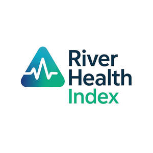

Trade Mark Journal No.2025/030 25 July 2025
UK00004193463 23 April 2025 (9,35,42)

- Class 9
- Downloadable software for scoring and benchmarking river health; Mobile applications for public interaction with river health data and community science submissions; Software for aggregating and standardising water quality and environmental datasets; Downloadable datasets and publications explaining the structure, metrics, and interpretation of river health data; Downloadable digital tools designed to assess, visualise, and communicate ecological condition and water quality performance in river catchments; Software for collecting, managing, and analysing environmental sensor data from river and catchment monitoring systems; Data visualisation software for reporting environmental and public sentiment metrics related to river health; Digital templates and protocols for assessing water quality, biodiversity, and environmental risk in freshwater systems; Cloud-based platforms for managing integrated catchment monitoring data; Application programming interfaces (APIs) for integrating river health data into third- party systems and platforms.
- Class 35
- Business consultancy services relating to the interpretation and application of river health data; Advisory services on the use of benchmarking tools for environmental and catchment performance evaluation; Consultancy on environmental performance metrics and their integration into organisational decision-making; Services relating to the comparative assessment of catchment health performance indicators; Business strategy advisory services based on analysis of public and stakeholder sentiment toward freshwater systems; Compilation and analysis of survey data for the purpose of informing environmental reporting and public engagement; Consultancy services supporting organisational reporting against environment, social, and governance (ESG) benchmarks linked to water environments; Provision of benchmarking reports to assist local authorities, landowners, and NGOs in evaluating water quality management practices; Strategic support for water companies and environmental organisations on communicating catchment performance; Collection and analysis of socio-environmental data for business planning and stakeholder engagement initiatives.
- Class 42
- Environmental monitoring services for assessing river health; Scientific and technological services relating to the analysis of water quality and ecological conditions in river catchments; Software development for river and catchment monitoring applications; Design and development of digital platforms for managing environmental data; Hosting of digital data systems for use in catchment-scale environmental monitoring; Development of data models and indicator frameworks for ecological and water quality assessment; Technical consultancy in the field of environmental data governance and quality assurance; Calibration of scientific instruments and environmental sensors used in water quality monitoring; Evaluation of biological and chemical water quality using nationally or internationally recognised methodologies; Analysis of biodiversity and ecological performance in freshwater ecosystems; Hydrological analysis services including baseflow measurement, flood monitoring, and event-based sampling; Development of scoring systems and analytical frameworks for environmental performance benchmarking; Mapping and geospatial analysis of river catchment health indicators; Scientific research relating to catchment-scale restoration, water quality improvement, and nature-based solutions; Advisory services on the integration of environmental data with investment strategies and resilience planning; Technical evaluation of ecological conditions over time and space in river catchments; Risk assessment services for environmental projects and infrastructure based on catchment monitoring insights; Ecological consultancy services relating to river and catchment management; Advisory services on water quality, habitat health, and environmental restoration in freshwater ecosystems; Services for conducting public and stakeholder surveys on environmental perception and awareness; Community-based ecological monitoring services; Field validation of sensor-based water quality data; Scheduling and coordination of environmental sampling programmes; On-site deployment and operational testing of environmental monitoring equipment; Consultancy services for integrating environmental monitoring methods into catchment or land management plans; Technical support for citizen science participation in catchment monitoring initiatives; Implementation of ecological field surveys and restoration tracking programmes; Environmental reporting services tailored for landowners, local authorities, and community groups; Evaluation of land use practices and their ecological impacts; Provision of hydromorphological field data for use in ecological assessments; Advisory services on adaptive catchment management planning; Design and delivery of long-term environmental monitoring frameworks; Coordination of collaborative ecological data collection projects; Delivery of ecological fieldwork to assess and communicate environmental change.
Additive Catchments Ltd